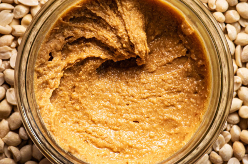

Bera Felouz
Something Personal is that I'm currently unemployed. I got laid off from my seasonal job. Something professionally, I worked at Citi Bank as a summer analyst in the Technology and Operations team. Something peculiar is I don't like peanut butter.


